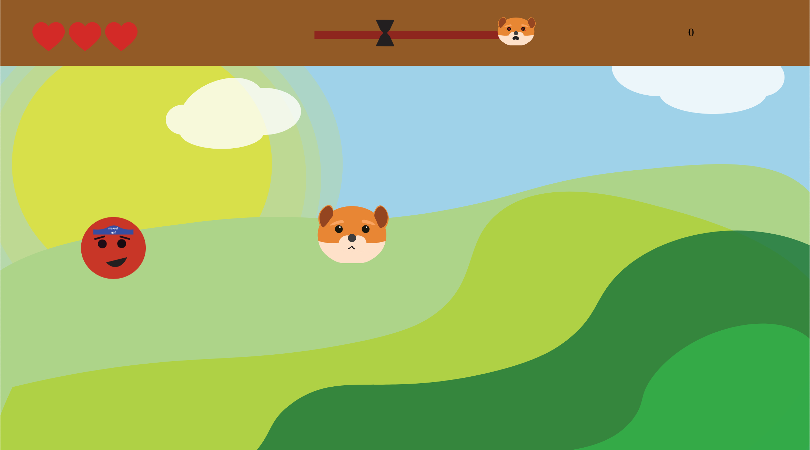
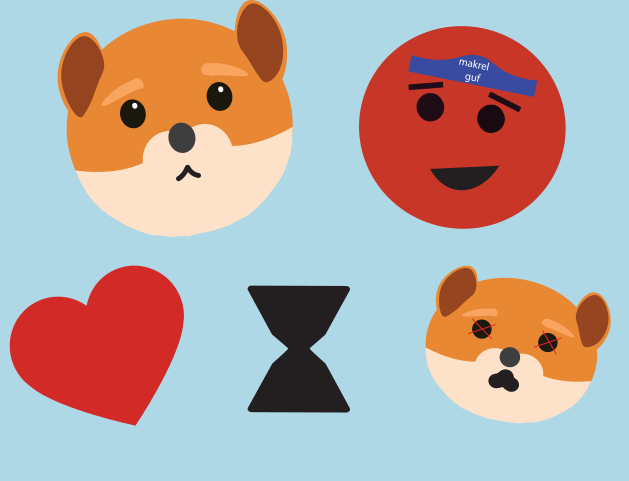

Spil
Frokost tid
Det er frokosttid på farmen og Mette F skal have sin elskede makrel mad.... Fang makrellen når den falder ned fra himlen
MEN PAS PÅ!
Mette F må ikke få fingrende i de små mink der bor på farmen

Ideen
Dette spil er inspireret og baseret på fruit machine, spillet indholder fald animationer der skal klikkes på. Spillet gør brug af stiludgangspunktet kawaii.

Teknik

Grafik
Assetliste
Assetlisten indeholder alle elementer der er gjort brug af til det færdige spil "Mink Amok". Her fremvises de enedleige designmæssige resultat for spil- og ui-elementer samt spilskærme der er udviklet i Adobe Illustrator.
